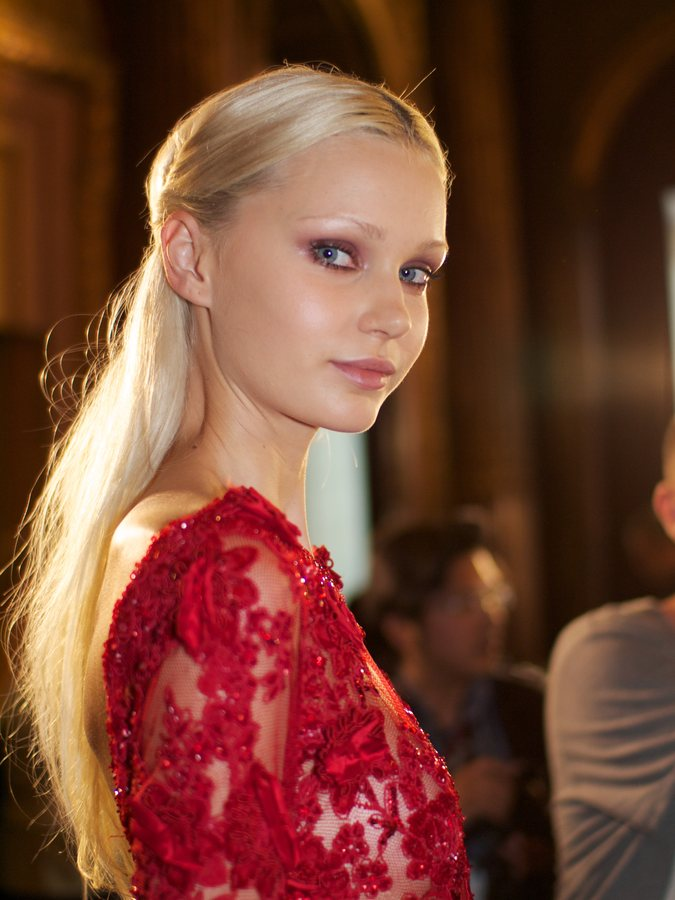
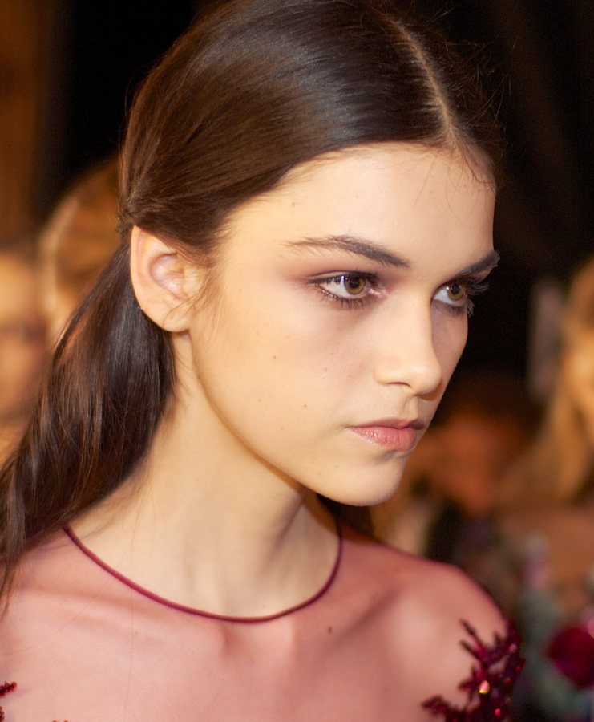
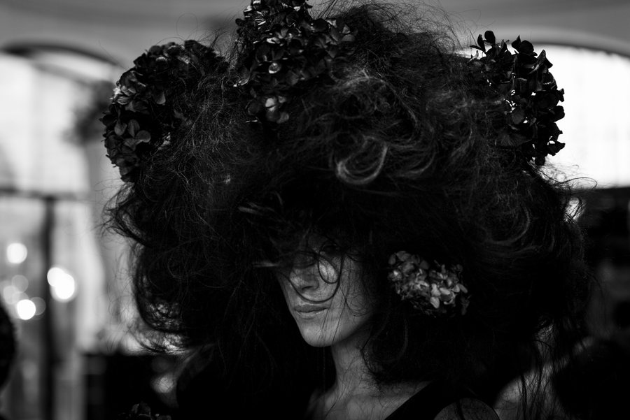
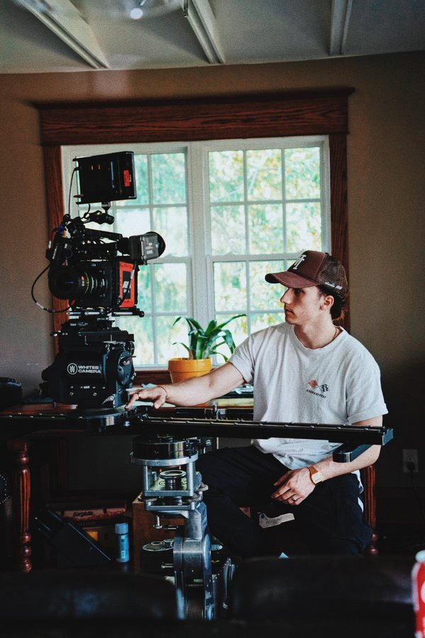

Ritratto editoriale
www.Pixel.la Free Stock Photos
Licenza: CC0 1.0
Usata per l'apertura, la galleria dei look e i confronti. Fonte: Wikimedia Commons.
Trasparenza
Le fotografie di moda e cinema che accompagnano il sito provengono da Wikimedia Commons. Sono immagini a licenza libera, scelte per mostrare il lavoro su soggetti reali. Qui trovi autore, licenza e fonte di ciascuna.
Le immagini sono state ritagliate, ridimensionate e colorate con i look Franchetti Arts per le dimostrazioni del sito. Le licenze indicano cosa è consentito: le immagini CC0 sono di pubblico dominio, le immagini CC BY 2.0 richiedono l'attribuzione all'autore, che trovi qui sotto. Nessuna fotografia è usata per suggerire un'affiliazione con le persone, i marchi o i film rappresentati.
www.Pixel.la Free Stock Photos
Licenza: CC0 1.0
Usata per l'apertura, la galleria dei look e i confronti. Fonte: Wikimedia Commons.

beyrouth
Licenza: CC BY 2.0
Usata per il confronto Ruggine Viva, l'immagine editoriale e la galleria. Fonte: Wikimedia Commons.

beyrouth
Licenza: CC BY 2.0
Usata per il confronto Grafite e la galleria. Fonte: Wikimedia Commons.

Alexander J.E. Bradley
Licenza: CC BY 2.0
Usata per i look Grafite, Salvia Grigia e Lavanda. Fonte: Wikimedia Commons.

MaxMezoDP
Licenza: CC0 1.0
Usata per il confronto Cobalto Profondo, la fascia cinematografica e la galleria dei look. Fonte: Wikimedia Commons.
Roland Tanglao
Licenza: CC0 1.0
Usata per la fascia “Moda e cinema” e la galleria. Fonte: Wikimedia Commons.
Le immagini CC BY 2.0 sono attribuite all'autore indicato e possono essere riutilizzate alle condizioni della licenza, citando la fonte e segnalando le modifiche. Le immagini CC0 non richiedono attribuzione; sono comunque accreditate per correttezza. Per segnalazioni su un contenuto: reportage@libero.it. Windows è un marchio di Microsoft Corporation; i nomi dei programmi citati appartengono ai rispettivi titolari.
.jpg){kind=link}
.jpg){kind=link}
_(cropped).jpg){kind=link}
.jpg){kind=link}